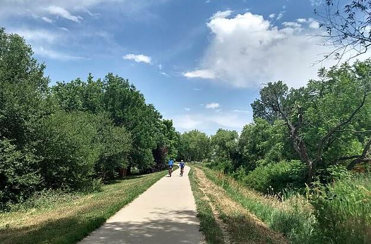
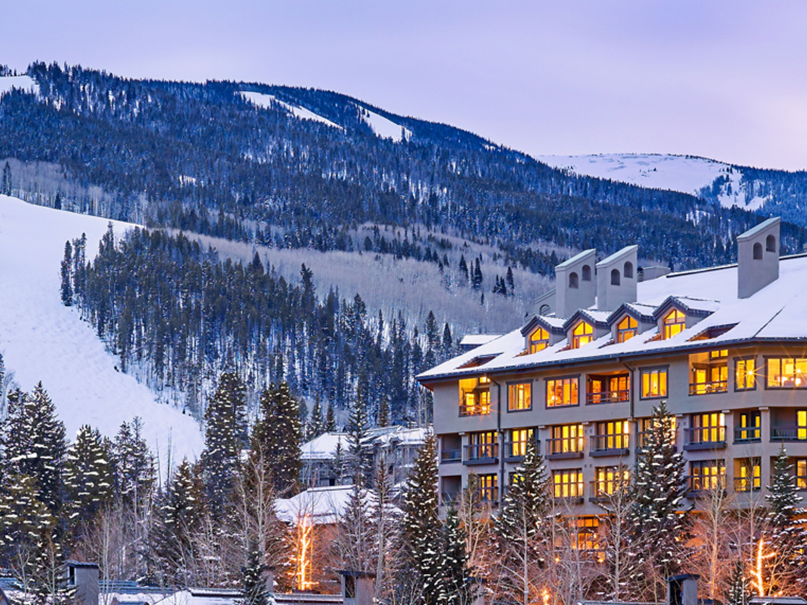
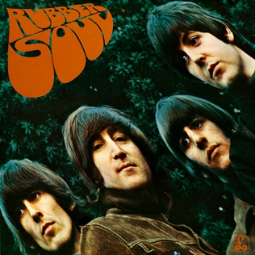

Hiking
One of my favorite outdoor activities during warm summers is hiking in the lovely state of Colorado. There are many national parks and trails to explore. My personal favorite is the High Line Canal Regional Trail.
Skiing
In winter, I love skiing. Colorado offers an abundance of choices. My favorite is Beaver Creek, where I've been skiing since I was three years old.
Music
I enjoy listening to various artists from different genres. The Beatles hold a special place for me, and my favorite album is Rubber Soul. Check out my favorite song, "Nowhere Man"! 
Films
I'm a big fan of cinema. One of my favorites is Manchester by the Sea. Warning: it's very sad!